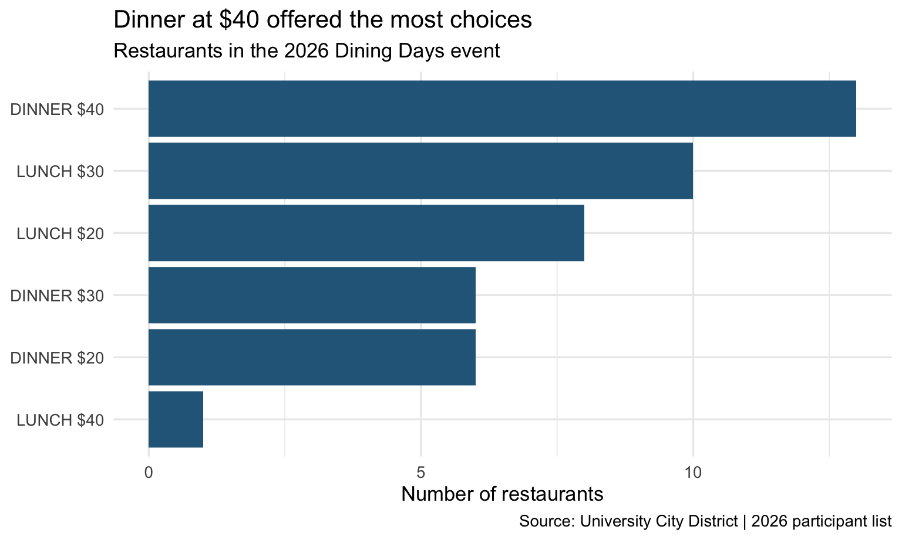

library(rvest)
library(tidyverse)
url <- "https://www.universitycity.org/diningdays/"
url[1] "https://www.universitycity.org/diningdays/"September 19, 2026
When choosing a restaurant, people often think about the price and whether they want lunch or dinner. In this post, I ask: Which meal and price group had the most restaurant choices during University City Dining Days in 2026? I use R and rvest to compare lunch and dinner at $20, $30, and $40.
The data come from the official Dining Days page, which I accessed on September 19, 2026. The page lists restaurants from the 2026 event and says the next event will be in July 2027. This post looks at the 2026 list. It does not mean these deals are available now.
University City District shares the restaurant list on a public webpage. I do not bypass logins, CAPTCHAs, or paywalls. The code downloads one page per run. I avoid running this step too often to limit requests to the website.
I use read_html() to read the webpage. Then I check the page title to make sure it is the right page.
The headings show dinner and lunch, each with three prices: $20, $30, and $40. The page also has a separate cafe deals section. I leave that section out because this post compares lunch and dinner.
On this webpage, each restaurant has a picture and a name. In the HTML, figure is the tag around this card, and figcaption is the tag around the name below the picture. I select the name link so I do not also collect the picture link. This uses the same method of selecting HTML tags as in class.
Each price group contains several rows of restaurant cards. I checked the HTML and chose the CSS classes for these rows. The six groups below are dinner at $20, $30, and $40, followed by lunch at $20, $30, and $40. A dot selects a class, and a comma selects more than one class. The class names come from the website. I chose the groups by checking the page; the code then gets the restaurant names from them.
section_selectors <- c(
".uagb-block-a013eba9, .uagb-block-278fad71",
".uagb-block-4a407aab, .uagb-block-85b34e24",
".uagb-block-d61ca5e5, .uagb-block-56971bc4, .uagb-block-9b2f9222, .uagb-block-b6c4b5ed",
".uagb-block-ff275771, .uagb-block-2bd8e149",
".uagb-block-8d01d505, .uagb-block-f4846327, .uagb-block-78266301",
".uagb-block-5f762f09"
)
section_meals <- c(
rep(meal_headings[1], 3),
rep(meal_headings[2], 3)
)
restaurant_names <- c()
restaurant_urls <- c()
meals <- c()
prices <- c()
for (i in 1:6) {
cards <- page |>
html_elements(section_selectors[i]) |>
html_elements("figure.wp-block-uagb-image__figure")
links <- cards |>
html_element("figcaption a")
restaurant_names <- c(restaurant_names, html_text2(links))
restaurant_urls <- c(restaurant_urls, html_attr(links, "href"))
meals <- c(meals, rep(section_meals[i], length(cards)))
prices <- c(prices, rep(price_headings[i], length(cards)))
}
restaurants_raw <- tibble(
restaurant = restaurant_names,
meal = meals,
price = prices,
url = restaurant_urls
)
head(restaurants_raw)# A tibble: 6 × 4
restaurant meal price url
<chr> <chr> <chr> <chr>
1 Haraz Coffee House DINNER $20 https://www.universitycity.org/dinin…
2 New Delhi Indian Restaurant DINNER $20 https://www.universitycity.org/dinin…
3 Pattaya Restaurant DINNER $20 https://www.universitycity.org/dinin…
4 The Post DINNER $20 https://www.universitycity.org/dinin…
5 Sangkee Noodle House DINNER $20 https://www.universitycity.org/dinin…
6 Thai Singha House DINNER $20 https://www.universitycity.org/dinin…The for loop does the same steps for all six groups. rep() repeats the meal and price labels for the restaurants in each group. Each row in the table is one restaurant at one meal and price. A restaurant can appear once for lunch and again for dinner.
I use str_squish() to remove extra spaces, as in the class example. I also remove rows with empty restaurant names. Then I check whether the same restaurant appears more than once in the same meal and price group.
[1] 44[1] 44# A tibble: 0 × 4
# ℹ 4 variables: meal <chr>, price <chr>, url <chr>, n <int>There are 44 options after cleaning. The duplicate check returns no rows, so no restaurant is repeated within the same group. I also compared the groups with the webpage. I keep restaurants that appear at different meals because those are different choices.
I use count() to count the restaurants in each meal and price group. The table and bar chart show which groups have more choices.
# A tibble: 6 × 3
meal price n
<chr> <chr> <int>
1 DINNER $40 13
2 LUNCH $30 10
3 LUNCH $20 8
4 DINNER $20 6
5 DINNER $30 6
6 LUNCH $40 1choice_plot <- choices |>
mutate(option = paste(meal, price)) |>
ggplot(aes(x = reorder(option, n), y = n)) +
geom_col(fill = "#286789") +
coord_flip() +
labs(
title = "Dinner at $40 offered the most choices",
subtitle = "Restaurants in the 2026 Dining Days event",
x = NULL,
y = "Number of restaurants",
caption = "Source: University City District | 2026 participant list"
) +
theme_minimal(base_size = 13)
choice_plot
Dinner at $40 has the most choices, with 13 restaurants. Lunch at $30 comes next, with 10. At $20, lunch has 8 choices, while dinner has 6. Lunch at $40 has only 1 choice. This shows that a higher price does not always mean more restaurant choices.
I save the cleaned restaurant data and the counts as CSV files so they are easy to check later.
Based on the 2026 list, I would suggest $40 dinner to someone who wants the most choices within one meal and price group. For someone with a $20 menu budget who can choose either meal, lunch has more options. For lunch, the $30 group has more choices than the $40 group. Paying more does not always give someone more choices.
This analysis only counts restaurants on the Dining Days list. It does not compare food quality, meal size, or available reservations. The prices do not include tax or tips. The results also do not represent all restaurants in University City. If the website changes, the CSS selectors and results need to be checked again. Before planning a future visit, check the new restaurant list, menus, and opening hours.